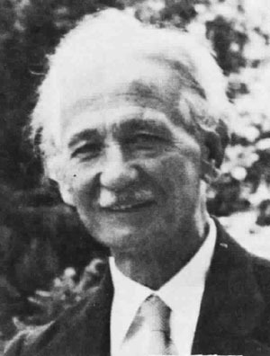

Η βιογραφία του Αλέξανδρου Δελμούζου από τους μαθητές του Γυμνασίου Λιδορικίου
Το Παρθεναγωγείο του Βόλου
Βιογραφίες
| Αλέξανδρος Δελμούζος (1880-1956) | |
|---|---|
|  | Γεννήθηκε στην Άμφισσα το 1880. Αποφοίτησε από τη Φιλοσοφική Σχολή Αθηνών και έφυγε για μεταπτυχιακές σπουδές στη Γερμανία (1902). Το 1908 κλήθηκε να διευθύνει το Πρότυπο Παρθεναγωγείο, που είχε μόλις ιδρυθεί στο Βόλο. Η τόλμη του να δοκιμάσει στην πράξη νέες παιδαγωγικές μεθόδους αλλά και τη διδασκαλία της δημοτικής γλώσσας, σε συνδυασμό με τη συνεργασία του με το Εργατικό Κέντρο Βόλου δημιούργησε έντονη δυσφορία στην τοπική κοινωνία, η οποία κατέληξε σε πρωτοφανείς ενέργειες (1911), οριστικό κλείσιμο του σχολείου και παραπομπή του Δελμούζου και των συνεργατών του στη δικαιοσύνη. Στη δίκη που έγινε το 1914, στο Πλημμελειοδικείο Ναυπλίου, ο Δελμούζος αθωώθηκε. Τα επεισόδια έμειναν γνωστά στην ιστορία ως «Αθεϊκά». Το 1918 κυκλοφόρησε το «Αλφαβητάρι με τον ήλιο», το πρώτο αναγνωστικό στο οποίο αποτυπώθηκαν οι παιδαγωγικές απόψεις του Δελμούζου, στο πλαίσιο της εκπαιδευτικής μεταρρύθμισης του Βενιζέλου (1917). Μετά την επανάσταση του Πλαστήρα αναλαμβάνει τη διεύθυνση του Μαρασλείου Διδασκαλείου (1923). Στο δεύτερο χρόνο της λειτουργίας του επαναλαμβάνεται η ιστορία του Βόλου. Κατηγορείται για αντεθνική εργασία, αθεΐα και υπόθαλψη της ανηθικότητας και απολύεται από το Μαράσλειο. Για άλλη μια φορά αθωώνεται ο ίδιος, αλλά ματαιώνεται το έργο του. Το 1928 εκλέγεται καθηγητής στην έδρα της Παιδαγωγικής του Πανεπιστημίου Θεσσαλονίκης από όπου παραιτήθηκε το 1937, χωρίς να καταλάβει άλλη δημόσια θέση μέχρι το θάνατό του, το Δεκέμβριο του 1956. Η βιογραφία του Αλέξανδρου Δελμούζου από τους μαθητές του Γυμνασίου Λιδορικίου Το Παρθεναγωγείο του Βόλου |